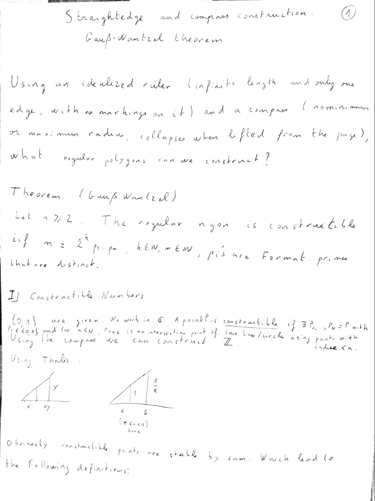
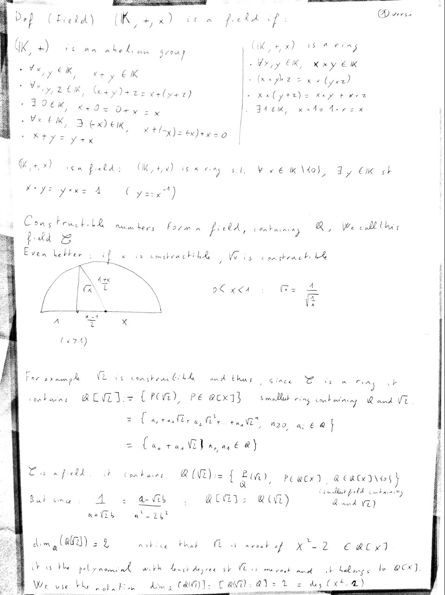

In our fourth talk, we have our first sharing in mathematics for undergraduates! Check it out!
Attached are the notes for the seminar: (1) .pdf
Construction using straightedge and compass dates back to ancient Greek mathematicians. The question of the possibility of constructing a regular polygon with n edges lied unanswered for thousands of years until Gauss together with Wantzel came to the following theorem:
A regular n-gon is constructible with straightedge and compass if and only if $n = 2^{k} p_{1} \ldots p_{n}$ where the $p_{i}$ are distinct Fermat primes.
Starting with the very easy Pythagorean and Thales’ theorems we will jump straight to Galois theory to prove this beautiful result. We will see how it is possible to grasp some powerful concepts of the theory using very little algebraic background. With simply understanding how to solve a polynomial equation of order 2 and how to perform Euclidian Division, we will discover the marvellous world of fields theory.
 